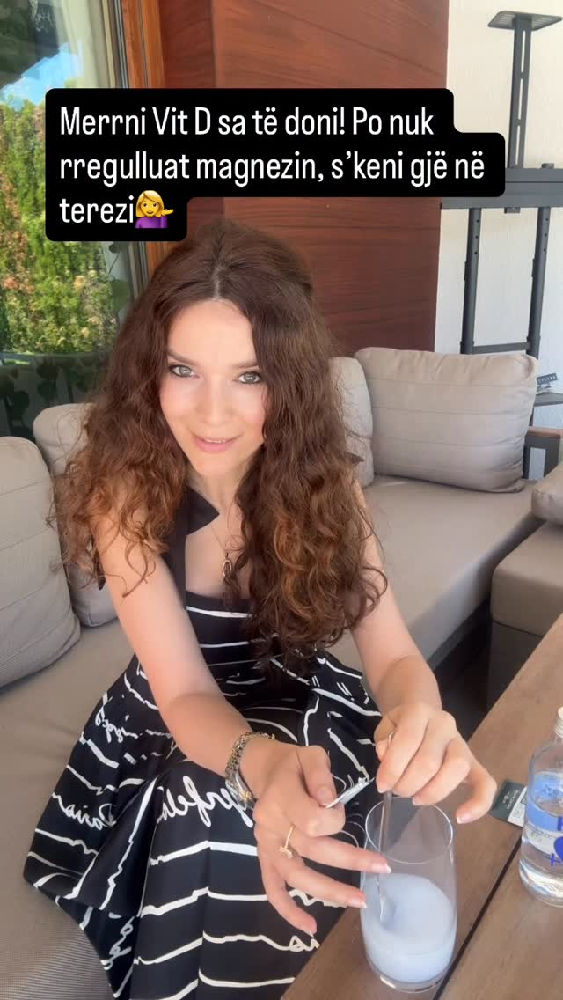
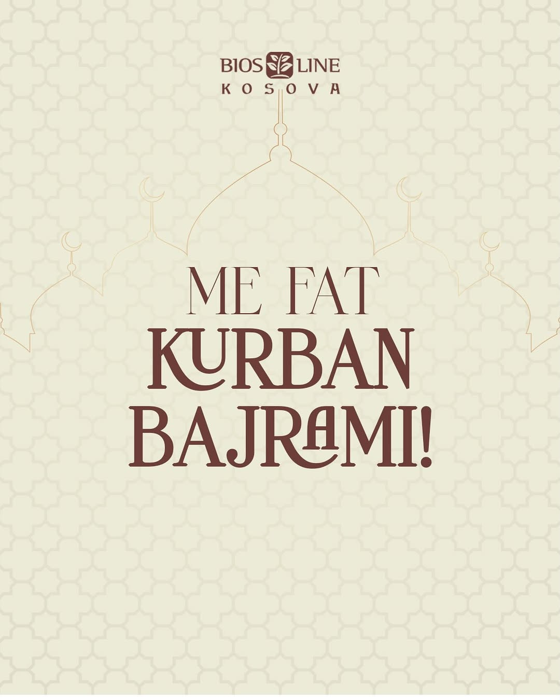
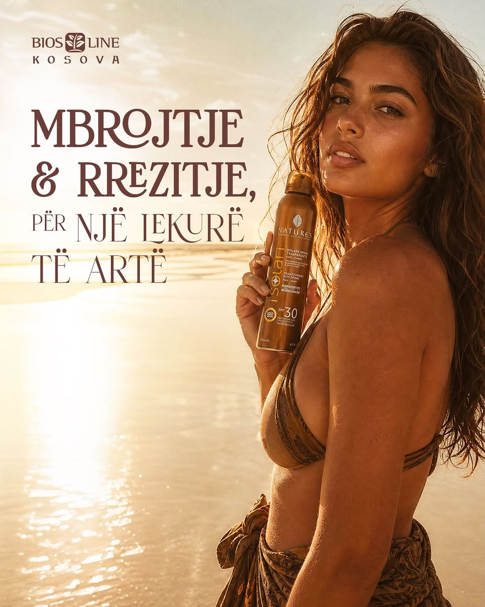
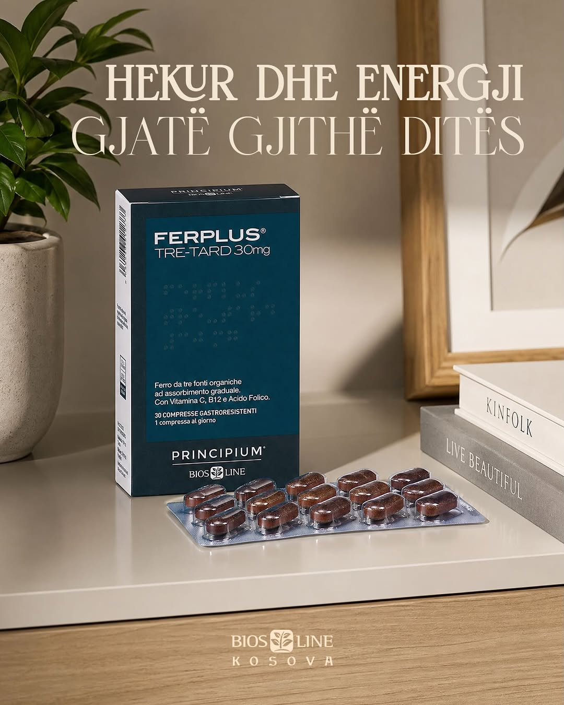
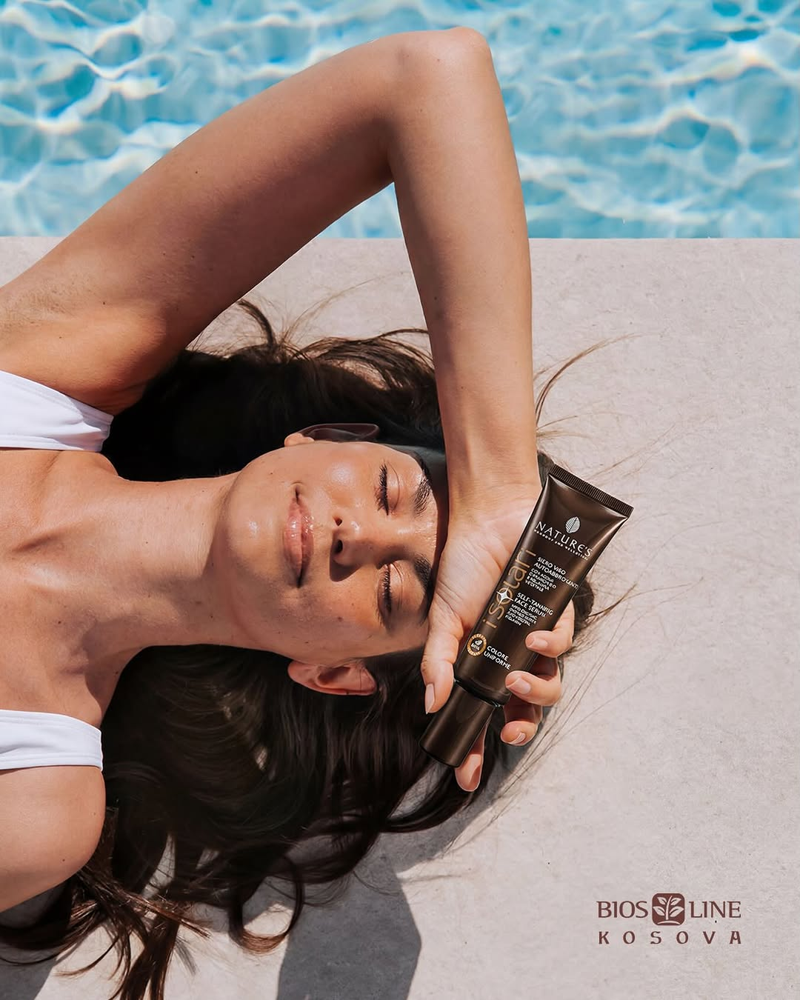
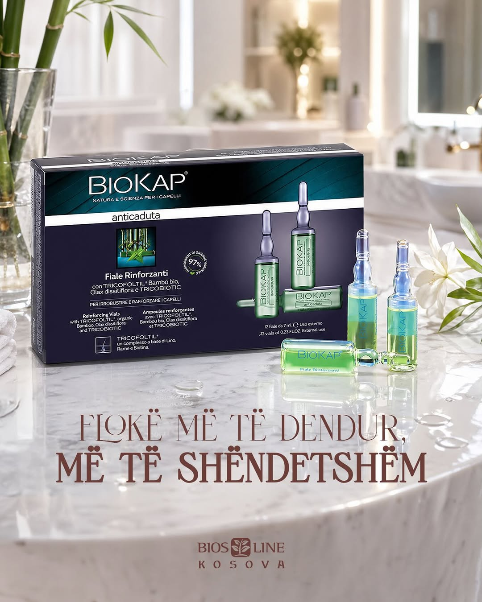
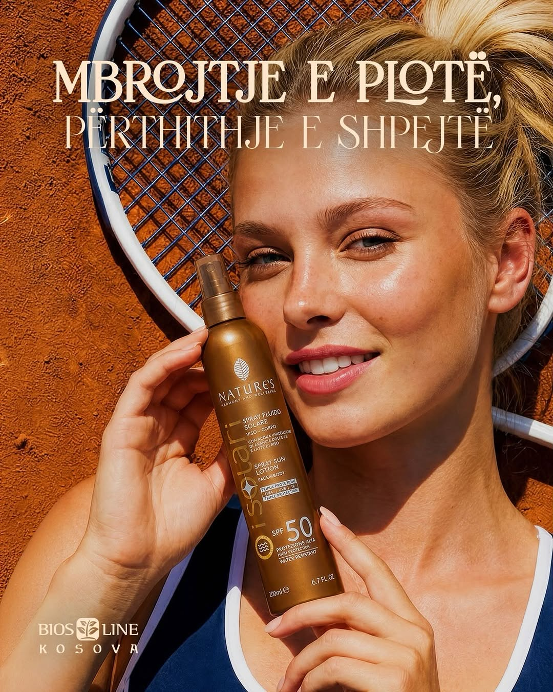
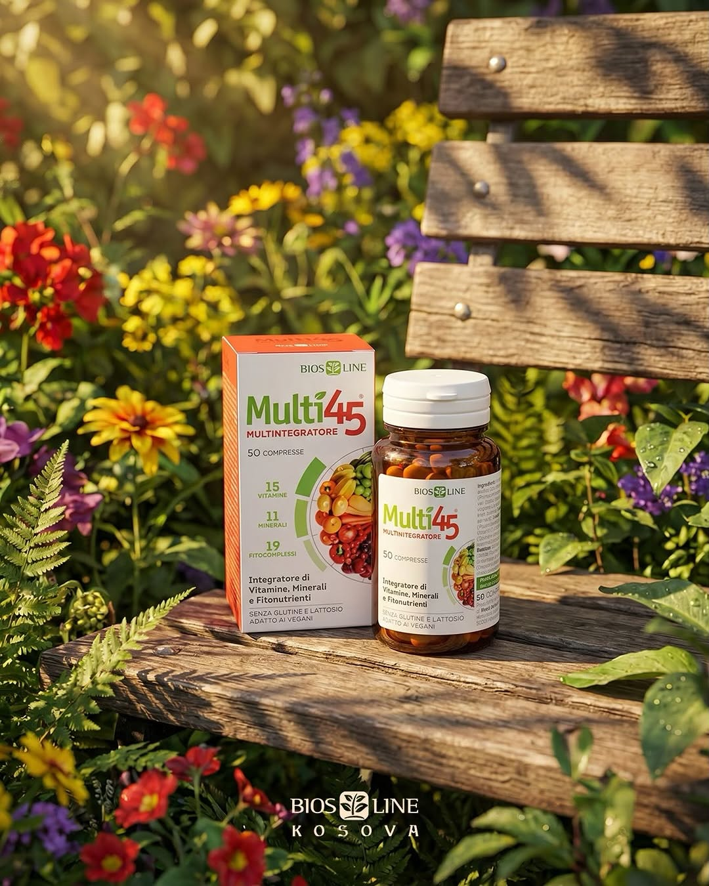
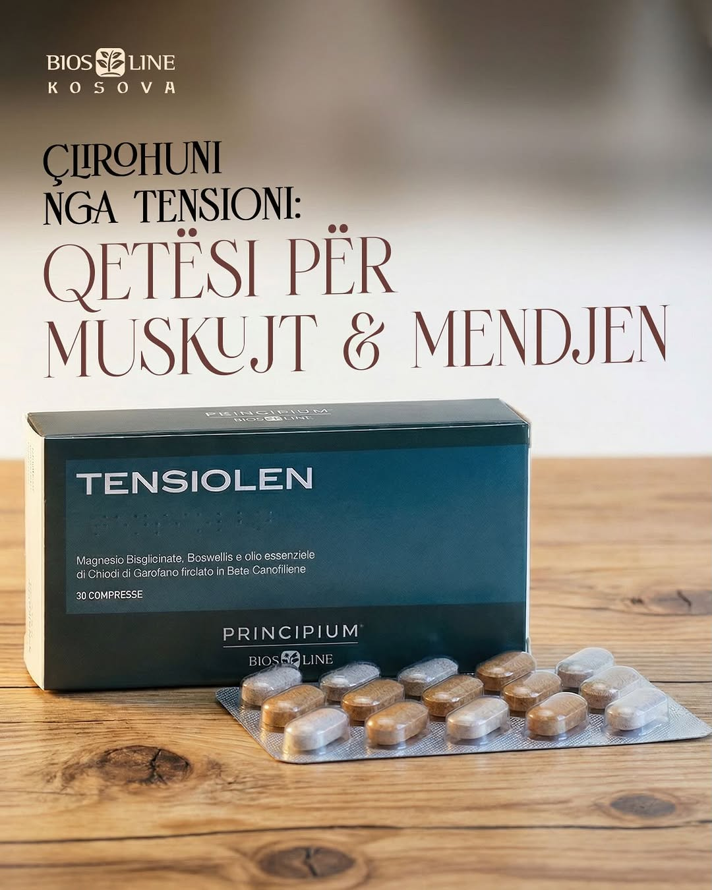
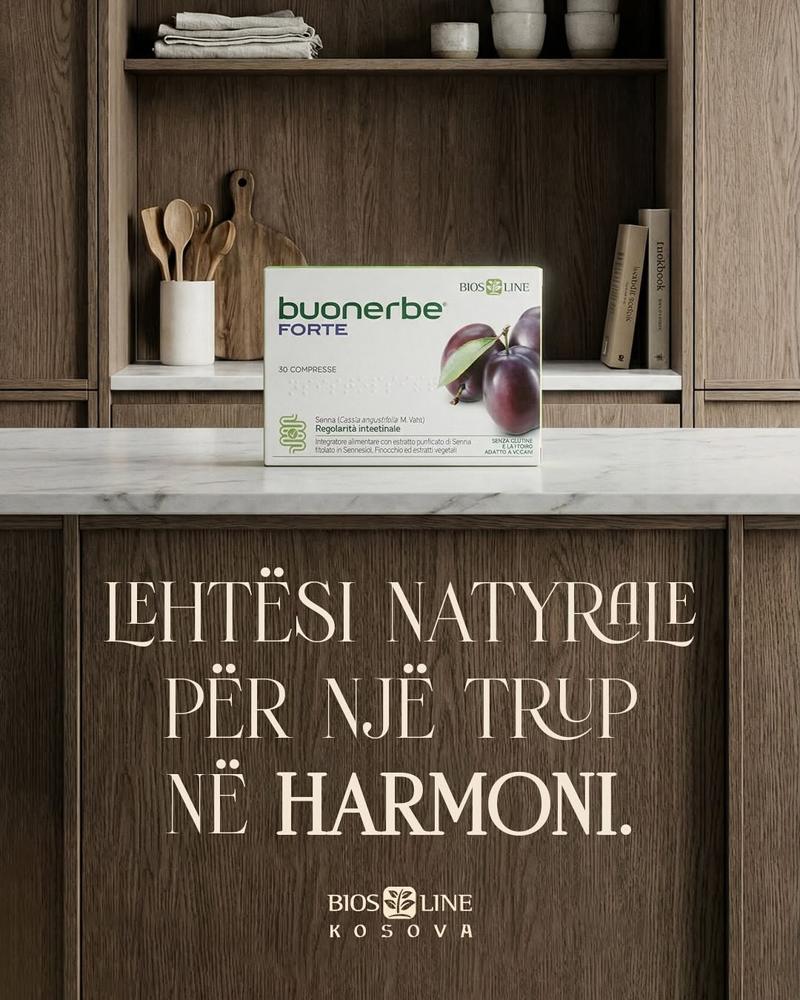

BIOS Line's Instagram performance exploded in May. Views jumped from 9.7K to 378.1K (+3,800%), profile activity grew +930%, and two influencer Reels (Diola Dosti) drove the bulk of it — 211K and 142K views, 2,270 and 1,208 likes. Net follower gain: +451 (530 follows / 79 unfollows). This is the playbook LYSI has been running for months — now BIOS Line is on it too.










Maj — BIOS Line
11 postime brand-owned + 2 Reels nga influencerët (etiketuar REEL). Klikoni mbi imazhet për të hapur postimet.
Renditja sipas views / engagement — Instagram · Maj 2026
2 Reels = ~353K views, 3,478 likes, 82 comments. Këto janë shtytësit kryesorë të rritjes prej +3,800% në views që pamë në Insights.
Meta Ads · May 1 — May 31, 2026
Instagram followers — May 2026
Audienca kryesore: femra 35–44 vjeç (51.7%), pasuar nga 25–34 (23.9%). Të bashkuara, segmenti 25–44 mbulon 75.6% të audiencës. Femra 87.2% / Meshkuj 12.8%.
Hapat për muajin e ardhshëm
2 Reels gjeneruan 353K views dhe 3,478 likes — më shumë se gjithë muaji i prillit. Skalo: 4–6 collab-e/muaj me Diola dhe shto 1–2 nano-creators. Format-i Reel duhet të bëhet default-i për BIOS Line në IG.
89.6% e views erdhën nga Reels, por brand-owned ende është 100% imazhe statike. Konverto 1–2 postime/javë në Reels (product demo, before/after, "ku ta gjeni"). Engagement-i organik do të rritet shpejt.
451 follower-ë të rinj në një muaj është 4× rritja normale. Krijo një Story serie kërkimore për ta — kush janë, çfarë kërkojnë — dhe lëre këtë audiencë të ushqejë creative-in e qershorit.
Aktualisht IG nuk është i lidhur me Meta Business Manager → s'mund të boost-ojmë reel-et direkt, s'mund të masim conversations nga IG ads. Lidhja merr 5 minuta dhe do na japë shumë më shumë kontroll në qershor.